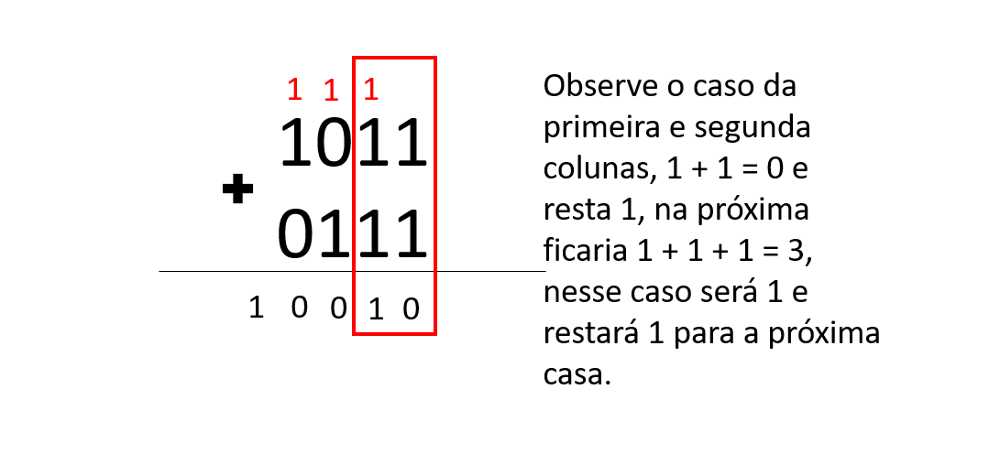
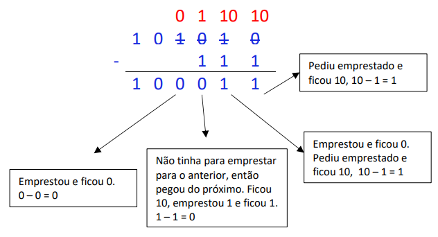

Sistema decimal tem como base 10 números: 0,1,2,3,4,5,6,7,8,9. Com essa base de números inumeras representações como exemplo essas 5.234 = 5000 + 200 + 30 + 4 = 5 ∙ 103 + 2 ∙ 102 + 3 ∙ 101 + 4 ∙ 100. Esses são basicamente o conjunto que aprendemos desde o começo da matemática na escola, são o básico do básico. Nesse não temos muito segredo.
O sistema decimal consiste em apenas 2 números 0 e 1 e com isso já complica um pouco mais a minha vida, esse sistema numericos é tão importante por conta dos computadores, porquê sua linguagem base são os números Binários
Tabela retirada dos slides da professora

Na adição 0+0=0 e 1+0=1 e após mostrar isso você me pergunta e se a soma for 1+1? A resposta é simples, é como 9+1 da zero mas resta um para a coluna ao lado.
Na subtração nos devemos começar como uma subtraçaõ normal onde 1-1=0 1-0=1, mas quando temos 0-1=?? Nos temos que pedir emprestado 1 para o número ao lado, se ele for 0 também nos continuaremos pedindo até ter algum que o valor seja igual a 1.
